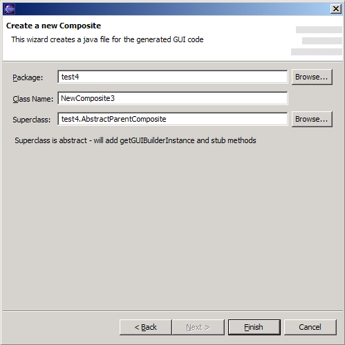

Note: Jigloo is not able to handle inherited protected fields or methods, since it cannot access protected objects.
Any changes you make to a superclass
will be picked up by the subclasses after the changes are saved,
and
the changes will be apparent in Jigloo. In some cases, however, the
changes will only become visible when the subclass is reloaded by using
the "Reload Form Editor" right-click menu option in the Form Editor.
Custom class properties
Besides allowing you to edit inherited elements, Jigloo is also able to allow you to manipulate publically-accessible
fields of custom classes added to the main class. This is discussed here.
Creating a subclass of a custom visual class
To create a subclass of an
existing custom class, start by creating a GUI class in the usual way using
Jigloo. See "Creating a new GUI" for details if you are not familiar.
You will get
the Jigloo New Wizard as usual, but instead of accepting the offered
"superclass" field, hit "Browse" and select the desired superclass.

If the superclass is abstract, then Jigloo will automatically insert
stub implementations of all
abstract methods of the superclass. In addition, if the superclass is
abstract and/or non-public, then Jigloo will insert the necessary
methods to enable Jigloo to manage the class - see this section for more details.
Editing properties of custom classes added to the other classes
Besides allowing you to edit inherited elements, Jigloo is also able to allow you to manipulate publically-accessible
fields of custom classes added to the main class. For example, if you
create a
JPanel (eg, FlowerPanel) which has a publically-accessible JTextField,
and you add that FlowerPanel (as a custom class) to another visual
class inside a Jigloo
editor, then you will be able to manipulate (change properties of, add
event listeners to etc.) that JTextField.
If,
for example, you edit the FlowerPanel in Jigloo and save your changes,
then the new FlowerPanel class will be re-loaded by any Jigloo editor
which uses a FlowerPanel as one of it's elements. You can experiment
with this using the FlowerShop example below.
To play with an existing example, create
a new "GUI
Form->Examples->Swing Inheritance/JavaBean (FowerShop) Example"
which will insert several classes
into your project (you might want to create a new "flowershop" package
for them. The forms are FlowerPanel, ShopFrame, and a subclass of
ShopFrame called FlowerShop, plus classes to demonstrate Jigloo's
handling of JavaBean features - custom editors, customizers and
BeanInfo. When you create the example, FlowerShop
will be opened in Jigloo's form editor.
FlowerShop demonstrates:
Below is a screen shot of the FlowerShop example. Note that in the Outline view, inherited fields are indicated by a blue icon .
If the fields are inherited from a class which is an ancestor of
this class's superclass then the icon will be green (for example, if
JFrame1 has a public JButton called button1, and JFrame3 extends
JFrame2 which extends JFrame1, then in the Outline for JFrame3, button1
will have a green decorator icon.
Note also the button at the top of the
Outline view with the same image - pressing this button will
alternately hide all inherited fields, will hide all fields not
directly inherited or will show all inherited fields, which can avoid
clutter in the Outline view.
Note that, for example, a JScrollPane's
scrollbars will also show up as inherited fields, since they can be
accessed through public getter methods. Therefore, Jigloo allows you to
manipulate such objects easily (for example, enabling or disabling
them).

Extending abstract and non-public classes
If a class extends an abstract, private or package-access class then Jigloo requires that the class implement a public static method called getGUIBuilderInstance
which should return an instance of the class which has not had it's GUI
elements initialized.
Any classes created by Jigloo will automatically
have this method inserted (along with a constructor which does not call
initGUI), but if you wish to edit an existing class which extends an
abstract or non-public class then you should implement the getGUIBuilderInstance
yourself.
This is an example for a Swing GUI,
/**
* This method should return an instance of this class which does
* NOT initialize it's GUI elements. This method is ONLY required by
* Jigloo if the superclass of this class is abstract. It is not needed
* in any other situation.
*/
public static Object getGUIBuilderInstance() {
return new NewJFrame(Boolean.FALSE);
}
/**
* This constructor is used by the getGUIBuilderInstance method to
* provide an instance of this class which has not had it's GUI elements
* initialized (ie, initGUI is not called in this constructor).
*/
public NewJFrame(Boolean initGUI) {
super();
}
and this is one for an SWT GUI:
/**
* This method should return an instance of this class which does
* NOT initialize it's GUI elements. This method is ONLY required by
* Jigloo if the superclass of this class is abstract or non-public. It
* is not needed in any other situation.
*/
public static Object getGUIBuilderInstance(
org.eclipse.swt.widgets.Composite parent, int style) {
return new NewComposite(parent, style, Boolean.FALSE);
}
/**
* This constructor is used by the getGUIBuilderInstance method to
* provide an instance of this class which has not had it's GUI elements
* initialized (ie, initGUI is not called in this constructor).
*/
public NewComposite(org.eclipse.swt.widgets.Composite parent,
int style, Boolean initGUI) {
super(parent, style);
}
In addition, if you use Jigloo to create an extension of an abstract class
then Jigloo will automatically insert stub implementations of all
abstract methods of the superclass.